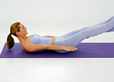
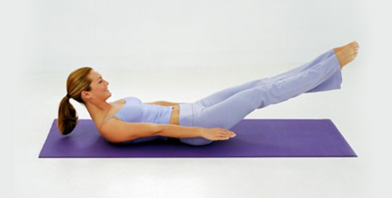

Everyday practice
Start where your body is
A good practice doesn’t begin with a goal pose. It begins with noticing what feels possible, and letting that be enough for today.
Talk with an instructor →
In the studio
Why we keep classes small
More space to ask questions, more time to find the variation that works, and a little more room to breathe.
Explore classes →
Rest & recovery
The strength of slowing down
Rest is not a reward for doing enough. It is part of how we care for ourselves and keep moving over time.
Try a restorative class →